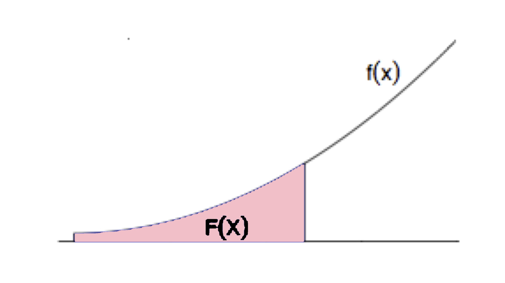
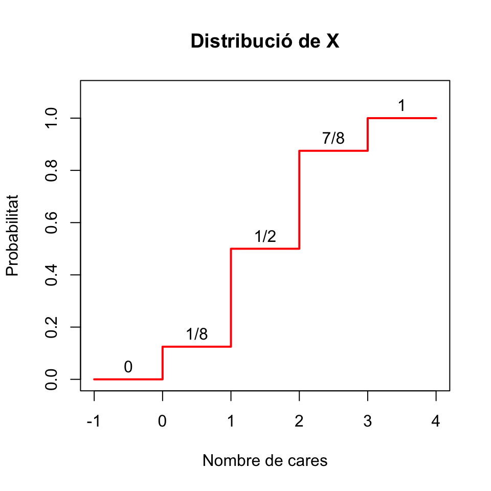

Tema 2 Variables aleatòries contínues
Quan una variable aleatòria pot prendre molts valors, les probabilitats individuals poden ser molt petites ja que la probabilitat total, 1, s’ha de repartir entre tots els possibles valors. Comparau en el gràfic següent les probabilitats d’una binomial \(B(0.5,5)\), que només pot prendre 6 valors (de 0 a 5), i una binomial \(B(0.5,500)\), que pot prendre 501 valors (de 0 a 500). La probabilitat mínima en el primer cas és més gran que la probabilitat màxima en el segon.

Com vos podeu imaginar, les variables aleatòries contínues, que poden prendre tot un continu de valors reals (i per tant infinits), tendran probabilitats individuals molt, molt petites.
En aquest curs ens restringirem a variables aleatòries contínues \(X: \Omega\to \mathbb{R}\) que satisfan la propietat extra següent: la seva funció de distribució \[ \begin{array}{rcl} F_X: \mathbb{R} & \to & [0,1]\\ x &\mapsto &P(X\leq x) \end{array} \] és contínua. Totes les variables aleatòries contínues que us puguin interessar en algun moment satisfan aquesta propietat, així que no perdem res imposant-la. I què guanyam?
Doncs que si \(X\) és una variable aleatòria contínua amb funció de distribució contínua, la probabilitat que prengui cada valor concret és 0: \[ P(X=a)=0 \text{ per a tot $a \in \mathbb{R}$}. \]
En particular, per a una variable aleatòria contínua:
Probabilitat 0 no significa impossible.
Cada valor de \(X\) té probabilitat 0, però quan mesuram \(X\) sobre un subjecte, prendrà qualque valor, no? Per tant, aquest valor de \(X\) és possible, malgrat tengui probabilitat 0.
De \(P(X=a)=0\) es dedueix que la probabilitat d’un esdeveniment definit amb una desigualtat és exactament la mateixa que la de l’esdeveniment corresponent definit amb una desigualtat estricta. En particular, contràriament al que passava a les variables aleatòries discretes, per a una variable aleatòria contínua sempre tenim que \[ P(X\leq a)=P(X<a) \] perquè \[ P(X\leq a)=P(X<a)+P(X=a)=P(X<a)+0=P(X<a). \]
Més exemples:
- \(P(X\geq a)=P(X> a)+P(X=a)=P(X> a)\)
- \(P(a \leq X\leq b)=P(a<X <b)+P(X=a)+P(X=b)\) \(=P(a<X <b)\)
2.1 Densitat i distribució
Sigui \(X\) una variable aleatòria contínua. Com ja hem dit, la seva funció de distribució \(F_X\) torna a ser \[ x\mapsto F_X(x)=P(X\leq x) \]
Però com que ara tenim que \(P(X=x)=0\) per a tot \(x\in \mathbb{R}\), no podem definir la funció de densitat de \(X\) com a \(f_X(x)=P(X=x)\). Què podem fer?
Recordau que, a les variables aleatòries discretes, \[ F_X(a)=\sum_{x\leq a} f_X(x) \]
En el context de matemàtiques “contínues”, la suma \(\sum\) es tradueix en una integral \(\int\). Definim aleshores la funció de densitat d’una variable aleatòria contínua \(X\) com la funció \(f_X:\mathbb{R}\to \mathbb{R}\) tal que:
\(f_X(x)\geq 0\), per a tot \(x\in \mathbb{R}\)
\(\displaystyle F_X(a)=\int_{-\infty}^a f_{X}(x)\, dx\) per a tot \(a \in \mathbb{R}\).

Recordau que la integral té una interpretació senzilla en termes d’àrees. En concret, donats \(a \in \mathbb{R}\) i una funció \(f(x)\), la integral \[ \int_{-\infty}^a f(x)\, dx \] és igual a l’àrea de la regió compresa entre la corba \(y=f(x)\) i l’eix d’abscisses \(y=0\) a l’esquerra de la recta vertical \(x=a\). Per tant, la funció de densitat \(f_X\) de \(X\) és la funció positiva tal que, per a tot \(a\in \mathbb{R}\), \(F_X(a)\) és igual a l’àrea sota la corba \(y=f_X(x)\) (és a dir, entre aquesta corba i l’eix d’abscisses) a l’esquerra de \(x=a\).

Quina és la idea intuïtiva que hi ha al darrere d’aquesta definició de densitat? Suposau que dibuixam histogrames de freqüències relatives dels valors de \(X\) sobre tota la població. Recordau que, en un histograma de freqüències relatives, la freqüència relativa de cada classe (ara la probabilitat, ja que parlam de tota la població) és l’amplada de la classe per l’alçada de la seva barra, i que anomenam a aquesta alçada la densitat de la classe (i per tant, qualque cosa tendrà a veure amb la densitat de \(X\), no trobau?).
Si dibuixam els histogrames de \(X\) prenent classes cada vegada més estretes, els seus polígons de freqüències tendeixen a dibuixar una corba, que hem acolorit en vermell al darrer histograma de la seqüència següent:

Quan l’amplada de les classes tendeix a 0, obtenim una corba que és el límit d’aquests polígons de freqüències:

Aquesta corba és precisament \(y=f_X(x)\). És a dir, la funció de densitat \(f_X\) d’una variable aleatòria contínua \(X\) és la funció límit dels polígons de freqüències d’histogrames de \(X\) quan l’amplada de les classes tendeix a 0.
Vegem algunes propietats que es dedueixen del fet que \(F_X(a)=P(X\leq a)\) sigui igual a l’àrea sota la corba \(y=f_X(x)\) a l’esquerra de \(x=a\):
Com que \(P(X<\infty)=P(\Omega)=1\), l’àrea total sota la curva \(y=f_X(x)\) és 1.
\(P(a\leq X\leq b)=P(X\leq b)-P(X<a)\) és l’àrea sota la corba \(y=f_X(x)\) a l’esquerra de \(x=b\) menys l’àrea sota la corba \(y=f_X(x)\) a l’esquerra de \(x=a\). Per tant, \(P(a\leq X\leq b)\) és igual a l’àrea sota la corba \(y=f_X(x)\) entre \(x=a\) i \(x=b\).

Si \(\varepsilon>0\) és molt, molt petit, l’àrea sota la corba \(y=f_X(x)\) entre \(a-\varepsilon\) i \(a+\varepsilon\) és aproximadament \(2\varepsilon\cdot f_X(a)\) (vegeu la Figura ??. És a dir, \[ P(a-\varepsilon\leq X\leq a+\varepsilon)\approx 2\varepsilon\cdot f_X(a). \]
Per tant, \(f_X(a)\) ens dóna una indicació de la probabilitat que \(X\) valgui aproximadament \(a\) (però no és \(P(X=a)\), que val 0). És a dir, per exemple, si \(f_X(a)=0.1\) i \(f_X(b)=0.5\), la probabilitat que \(X\) prengui un valor al voltant de \(b\) proper a \(b\) és 5 vegades més gran que la probabilitat que prengui un valor al voltant d’\(a\).

A les variables aleatòries discretes, definíem la moda com el valor (o els valors) més probable. Però ara no té sentit definir la moda d’una variable contínua \(X\) com el valor \(x_0\) tal que \(P(X=x_0)\) sigui màxim, perquè \(P(X=x)=0\) per a tot \(x\in \mathbb{R}\). Aleshores, es defineix la moda d’una variable aleatòria contínua \(X\) com el valor (o els valors) \(x_0\) tal que \(f_X(x_0)\) és màxim. Com que \(f_X(x_0)\) mesura la probabilitat que \(X\) valgui aproximadament \(x_0\), tenim que la moda de \(X\) és el valor prop del qual és més probable que caigui el valor de \(X\).
Unes consideracions finals:
- Ho hem dit en la definició, i ho hem emprat implícitament en tota la secció, però ho tornam a repetir: \(f_X(x)\geq 0\) per a tot \(x\in \mathbb{R}\).
- \(f_X(x)\) no és una probabilitat, i per tant pot ser més gran que 1. Per exemple, el gràfic següent mostra la densitat d’una variable normal \(N(0,0.01)\) (vegeu la Secció 2.3), que arriba a valer gairebé 40.

- La funció de densitat \(f_X\) no té per què ser contínua, encara que la funció de distribució \(F_X\) ho sigui.
2.2 Esperança, variància, quantils…
L’esperança i la variància d’una variable aleatòria contínua \(X\), amb funció de densitat \(f_X\), es defineixen com en el cas discret, substituint la suma \(\sum_{x\in D_x}\) per una integral.
La mitjana, o esperança (o valor mitjà, valor esperat…), de \(X\) és \[ E(X)=\int_{-\infty}^{\infty}x \cdot f_{X}(x)\, dx \] És a dir, és l’àrea compresa entre l’eix d’abscisses i la corba \(y=xf_X(x)\). Com en el cas discret, també la indicarem de vegades amb \(\mu_X\).
Aquest valor té la mateixa interpretació que en el cas discret:
Representa el valor mitjà de \(X\) sobre el total de la població.
És (amb probabilitat 1) el límit de la mitjana aritmètica dels valors de \(X\) sobre mostres aleatòries de mida \(n\), quan \(n\to \infty\).
Si \(g:\mathbb{R}\to \mathbb{R}\) és una funció contínua, l’esperança de \(g(X)\) és \[ E(g(X))=\int_{-\infty}^{+\infty} g(x) f_X(x)dx \]
La variància de \(X\) és \[ \sigma(X)^2=E((X-\mu_X)^2)=\int_{-\infty}^{+\infty} (x-\mu_X)^2 f_X(x)dx \] i es pot demostrar que és igual a \[ \sigma(X)^2=E(X^2)-\mu_X^2. \] També la indicarem de vegades amb \(\sigma_X^2\).
La desviació típica de \(X\) és \[ \sigma(X)=+\sqrt{\sigma(X)^2} \] i també la indicarem de vegades amb \(\sigma_X\).
Com en el cas discret, la variància i la desviació típica quantifiquen la variabilitat dels resultats de \(X\) respecte del seu valor mitjà \(\mu_X\).
Aquests paràmetres de \(X\) tenen les mateixes propietats en el cas continu que en el discret. Les recordam:
Si \(b\) és una variable aleatòria constant, \(E(b)=b\) i \(\sigma(b)^2=0\).
\(E(a X+b)=a E(X)+b\).
\(E(X+Y)=E(X)+E(Y)\).
Si \(X\leq Y\), llavors \(E(X)\leq E(Y)\).
Si \(a,b\in \mathbb{R}\), \(\sigma(aX+b)^2=a^2 \sigma(X)^2\) i \(\sigma(aX+b)=|a|\cdot \sigma(X)\).
Si \(X,Y\) són independents, \(\sigma(X+Y)^2=\sigma(X)^2+\sigma(Y)^2\). Si no són independents, aquesta igualtat pot ser falsa.
El quantil d’ordre \(p\) (o \(p\)-quantil) d’una variable aleatòria contínua \(X\) és el valor \(x_p\in \mathbb{R}\) més petit tal que \[ F_X(x_p)=P(X\leq x_p)=p \]
La mediana de \(X\) és el seu 0.5-quantil, el primer i tercer quartils són el seu 0.25-quantil i el seu 0.75-quantil, etc.
2.3 Variables aleatòries normals
Una variable aleatòria contínua \(X\) és normal (o té distribució normal) de paràmetres \(\mu\) i \(\sigma\) (és \(N(\mu,\sigma)\), per a abreujar) quan la seva funció de densitat és \[ f_{X}(x)=\frac{1}{\sqrt{2\pi}\sigma} e^{{-(x-\mu)^2}/{2\sigma^{2}}} \mbox{ per a tot } x\in \mathbb{R} \]
Naturalment, no us heu de saber aquesta fórmula.

Però sí que heu de saber que:
Una variable aleatòria normal \(X\) és contínua, i per tant \(P(X=x)=0\), \(P(X\leq x)=P(X<x)\) etc.
Si \(X\) és normal, la seva funció de distribució \(F_X\) és injectiva i creixent: si \(x<y\), \(F_X(x)<F_X(y)\).
Una variable aleatòria normal diem que és estàndard (o típica) quan és \(N(0,1)\). Normalment indicarem les variables normals estàndard amb \(Z\).
La gràfica de la densitat d’una variable aleatòria normal és la famosa campana de Gauss:

La distribució normal és una distribució teòrica, no la trobareu exacta en la vida real. I malgrat el seu nom, no és més “normal” que altres distribucions contínues.

Però és molt important, pel fet que moltes distribucions de la vida real són aproximadament normals. El motiu és que:
Si una variable aleatòria consisteix a prendre un nombre molt gran \(n\) de mesures independents d’una o diverses variables aleatòries i sumar-les, aleshores té distribució aproximadament normal, encara que les variables aleatòries de partida no ho siguin.
Exemple 2.1 Una variable binomial \(B(n,p)\) s’obté prenent \(n\) mesures independents d’una variable Bernoulli \(Be(p)\) i sumant-les. Per tant, per la “regla” anterior, una \(B(n,p)\) hauria de ser aproximadament normal si \(n\) és gran. Doncs sí, si \(n\) és gran (posem més gran que 40, encara que si \(p\) és molt propera a 0 o 1 la mida de les mostres ha de ser més gran), la distribució d’una variable \(X\) binomial \(B(n,p)\) s’acosta molt a la d’una normal \(N(np,\sqrt{np(1-p)})\), on, recordau que si \(X\) és \(B(n,p)\), aleshores \(\mu_X=np\) i \(\sigma_X=\sqrt{np(1-p)}\).
Per exemple, el gràfic següent compara les funcions de distribució d’una binomial \(B(40,0.3)\) i una normal \(N(40\cdot 0.3,\sqrt{40\cdot 0.3\cdot 0.7})\).

2.4 Amb R
Per calcular probabilitats d’una \(N(\mu,\sigma)\), cal calcular les integrals a mà.

O podeu usar R o alguna aplicació per a mòbil o tauleta. Per a R, la normal és norm. Per tant, si \(X\sim N(\mu,\sigma)\):
dnorm(x,mu,sigma)dóna el valor de la densitat \(f_X(x)\)pnorm(x,mu,sigma)dóna el valor de la distribució \(F_X(x)=P(X\leq x)\); afegint-hi el paràmetrelower.tail=FALSEdóna el valor de \(P(X\geq x)\)qnorm(q,mu,sigma)dóna el \(q\)-quantil de \(X\)rnorm(n,mu,sigma)dóna un vector de \(n\) nombres aleatoris generats amb aquesta distribució
Així, per exemple, si \(X\) és \(N(1,2)\)
- \(P(X\leq 1.5)\) és
## [1] 0.5987063- El 0.4-quantil de \(X\), és a dir, el valor \(q\) tal que \(P(X\leq q)=0.4\) és
## [1] 0.4933058- \(P(X=1.5)\) és
## [1] 0.1933341dnorm(1.5,1,2) és el valor de la funció de densitat de \(X\) en 1.5, que no creiem que us interessi gaire.
Si la normal és estàndard, no fa falta entrar la \(\mu=0\) i la \(\sigma=1\) (són els valors per defecte d’aquests paràmetres per a norm). Així, si \(Z\) és \(N(0,1)\):
- \(P(Z\leq 1.5)\) és
## [1] 0.9331928- El seu 0.95-quantil és
## [1] 1.644854Si \(X\sim N(0,1)\), què val \(P(-1\leq X\leq 1)\)?
Com que \(P(-1\leq X\leq 1)=P(X\leq 1)-P(X\leq -1)\),
## [1] 0.6826895Exemple 2.2 A la secció anterior, us hem dit que una variable binomial \(B(n,p)\) amb \(n\) gran s’aproxima per mitjà d’una variable normal \(N(np,\sqrt{np(1-p)})\). Així, per exemple, una variable \(X\) binomial \(B(400,0.2)\) s’aproxima per mitjà d’una variable \(Y\) normal \(N(400\cdot 0.2,\sqrt{400\cdot 0.2\cdot 0.8})=N(80,8)\). Aquest “s’aproxima” significa que \(F_X\approx F_Y\) i que \(f_X(m)\approx f_Y(m)\) per als \(m\in D_X\).
Vegem alguns exemples:
- \(P(X\leq 70)\):
## [1] 0.1163917- \(P(Y\leq 70)\):
## [1] 0.1056498- \(f_X(70)\):
## [1] 0.02338443- \(f_Y(70)\):
## [1] 0.02283114Quan aproximam una variable discreta, com ara una binomial, per mitjà d’una variable contínua, com ara una normal, hi sol haver alguna correcció de continuïtat que millora l’aproximació. En el cas de l’aproximació normal de la binomial, aquesta correcció consisteix en entendre que l’esdeveniment \(X=a\) correspon a l’esdeveniment \(Y\in (a-1/2,a+1/2)\). Vegem amb alguns exemples que aplicant aquesta correcció de continuïtat obtenim aproximacions millors. Seguim amb la \(X\) i la seva aproximación normal \(Y\) d’abans.
- Hem vist que \(P(X\leq 70)=0.1163917\) i \(P(Y\leq 70)=0.1056498\). L’aproximació de continuïtat ens diu que és millor aproximar \(P(X\leq 70)\) per mitjà de \(P(Y< 70+1/2)\):
## [1] 0.1175152- Hem vist que \(P(X=70)=0.0233844\). Vegem que això s’aproxima molt bé amb \(P(70-1/2< Y< 70+1/2)\):
## [1] 0.02283949Exemple 2.3 La pressió sistòlica, mesurada en mm Hg, es distribueix com una variable normal amb valor mitjà i desviació típica que depenen del sexe i l’edat. Per a la franja d’edat 16-24 anys, aquests valors (s’estima que) són:
- Per a homes, \(\mu=124\) i \(\sigma=13.7\)
- Per a dones, \(\mu=117\) i \(\sigma=13.7\)
El model d’hipertensió-hipotensió acceptat és el descrit en la Figura 2.1. Volem calcular els límits de cada classe per a cada sexe en aquest grup d’edat.

Figura 2.1: Model d’hipertensió-hipotensió.
Vegem:
- El límit superior del grup d’hipotensió serà el valor que deixa a l’esquerra un 5% de les tensions: el 0.05-quantil de la distribució.
- El límit superior del grup de risc d’hipotensió serà el valor que deixa a l’esquerra un 10% de les tensions: el 0.1-quantil de la distribució.
- El límit inferior del grup de risc d’hipertensió serà el valor que deixa a l’esquerra un 90% de les tensions: el 0.9-quantil de la distribució.
- El límit inferior del grup d’hipertensió serà el valor que deixa a l’esquerra un 95% de les tensions: el 0.95-quantil de la distribució.
En els homes, la tensió sistòlica és una variable aleatòria \(N(124,13.7)\). Aleshores, aquests quantils són:
- El 0.05-quantil:
## [1] 101.4655- El 0.1-quantil:
## [1] 106.4427- El 0.9-quantil:
## [1] 141.5573- El 0.95-quantil:
## [1] 146.5345En resum, per als homes de 16 a 24 anys: \[ \begin{array}{|ll|} \hline \text{Grup} & \text{Interval}\\ \hline \text{Hipotens} & <101.5\\ \text{Prehipotens} & 101.5\text{ a }106.4\\ \text{Normotens} & 106.4\text{ a }141.6\\ \text{Prehipertens} & 141.6\text{ a }146.5\\ \text{Hipertens} & > 146.5\\ \hline \end{array} \]
2.4.1 Propietats bàsiques
Per començar:
Per tant, si \(Z\) és una normal estàndard, \(E(Z)=0\) i \(\sigma(Z)=1\).
Una de les propietats clau de la distribució normal és la seva simetria:

Per tant, el valor al voltant del qual és més probable que una variable normal \(N(\mu,\sigma)\) caigui és el seu valor esperat \(\mu\).
En particular, si \(Z\) és \(N(0,1)\), llavors \(f_Z\) és simètrica al voltant de 0, és a dir, \(f_{Z}(-x)=f_{Z}(x)\), i la moda de \(Z\) és \(x=0\).
Recordau que la funció de distribució d’una variable aleatòria contínua \(X\), \[ F_X(x)=P(X\leq x) \] és l’àrea compresa entre la densitat \(y=f_X(x)\) i l’eix d’abscisses a l’esquerra de \(x\).

Llavors, la simetria de \(f_X\) fa que, per a tot \(x\geq 0\), les àrees a l’esquerra de \(\mu-x\) i a la dreta de \(\mu+x\) siguin iguals.

És a dir, \[ P(X\leq \mu-x)=P(X\geq \mu+x)=1-P(X\leq \mu+x) \]
En particular (prenent \(x=0\)) \[ P(X\leq \mu)=1-P(X\leq \mu)\Rightarrow P(X\leq \mu)=0.5 \] i per tant, \(\mu\) és també la mediana de \(X\).
En el cas concret de la normal estàndard \(Z\), per a qualsevol \(z\geq 0\) es té que les àrees a l’esquerra de \(-z\) i a la dreta de \(z\) són iguals \[ P(Z\leq -z)=P(Z\geq z)=1-P(Z\leq z) \] i la mediana de \(Z\) és 0.
Si \(\mu\) creix, desplaça a la dreta l’eix vertical de simetria de la densitat, i amb ell tota la corba.

Si \(\sigma\) creix, la corba s’aplana: en augmentar la desviació típica, els valors són més variats i augmenta la probabilitat que prenguin valors més llunays de \(\mu\).

El gràfic següent mostra l’efecte combinat:

Denotarem per \(z_q\) el \(q\)-quantil d’una variable normal estàndard \(Z\). És a dir, \(z_q\) és el valor tal que \(P(Z\leq z_q)=q\).
A banda del fet que \(z_{0.5}=0\) (la mediana de \(Z\) és 0), hi ha dos quantils més de la normal estàndard \(Z\) que hauríeu de recordar:
\(z_{0.95}=1.64\); és a dir, \(P(Z\leq 1.64)=0.95\) i per tant \(P(Z\leq -1.64)=P(Z\geq 1.64)=0.05\) i \[ P(-1.64\leq Z\leq 1.64)=0.9. \]
\(z_{0.975}=1.96\); és a dir, \(P(Z\leq 1.96)=0.975\) i per tant \(P(Z\leq -1.96)=P(Z\geq 1.96)=0.025\) i \[ P(-1.96\leq Z\leq 1.96)=0.95. \]
Una de les propietats de la distribució normal que ens faciliten molt la vida és que tota combinació lineal de variables aleatòries normals independents és normal. En concret, tenim els dos resultats següents:
Teorema 2.1 Sigui \(X\) una variable \(N(\mu,\sigma)\).
Per a tots \(a,b\in \mathbb{R}\), \(aX+b\) és normal \(N(a\mu+b,|a|\cdot\sigma)\).
En particular, la tipificada de \(X\) \[ Z=\dfrac{X-\mu}{\sigma} \] és normal estàndard.
Més en general:
Les probabilitats de la normal tipificada determinen les de la normal original, perquè si \(X\) és \(N(\mu,\sigma)\): \[ \begin{array}{rl} P(a\leq X\leq b)\!\!\!\!\! & \displaystyle =P\Big( \frac{a-\mu}{\sigma}\leq \frac{X-\mu}{\sigma}\leq \frac{b-\mu}{\sigma}\Big)\\ & \displaystyle =P\Big(\frac{a-\mu}{\sigma}\leq Z\leq \frac{b-\mu}{\sigma}\Big) \end{array} \] Això serveix per deduir fórmules, i els vostres pares ho empraven per calcular probabilitats de normals (amb taules de probabilitats de la normal estàndard); ara és més còmode usar una apli.
2.4.2 Intervals de referència
Un interval de referència del \(100q\%\) per a una variable aleatòria \(X\) és un interval \([a,b]\) tal que \[ P(a\leq X\leq b)=q. \] És a dir, un interval de referència del \(100q\%\) per a \(X\) és un interval que conté els valors de \(X\) del \(100q\%\) dels subjectes de la població.
Per exemple, hem vist en la secció anterior que [-1.64,1.64] i [-1.96,1.96] són intervals de referència del 90% i del 95%, respectivament, per a una variable normal estàndard \(Z\).
Els més comuns són els intervals de referència del 95% (\(q=0.95\)), que satisfan que \[ P(a\leq X\leq b)=0.95 \] i són els, que per exemple, us donen com a valors de referència en les analítiques:

Quan \(X\) és \(N(\mu,\sigma)\), aquests intervals de referència es prenen sempre centrats en la mitjana \(\mu\), és a dir, de la forma \[ [\mu-\text{alguna cosa},\mu+\text{aquesta mateixa cosa}]. \] Es calculen fàcilment amb el resultat següent:
Teorema 2.3 Si \(X\) és \(N(\mu,\sigma)\), un interval de referència del \(100q\%\) per a \(X\) és \[ [\mu- z_{(1+q)/2}\cdot \sigma, \mu+ z_{(1+q)/2}\cdot \sigma] \] on \(z_{(1+q)/2}\) indica el \((1+q)/2\)-quantil de la normal estàndard \(Z\). Normalment escriurem aquest interval \[ \mu\pm z_{(1+q)/2}\cdot \sigma. \]
En efecte: \[ \begin{array}{l} P(\mu-x\leq X\leq \mu+x)=q\\ \qquad \Longleftrightarrow \displaystyle P\Big(\frac{\mu-x-\mu}{\sigma}\leq \frac{X-\mu}{\sigma}\leq \frac{\mu+x-\mu}{\sigma}\Big)=q\\ \qquad \Longleftrightarrow \displaystyle P(-x/{\sigma}\leq Z\leq {x}/{\sigma})=q\\ \qquad \Longleftrightarrow \displaystyle P(Z\leq {x}/{\sigma})-P(Z\leq -{x}/{\sigma})=q\\ \qquad \Longleftrightarrow \displaystyle P(Z\leq {x}/{\sigma})-(1-P(Z\leq {x}/{\sigma}))=q\\ \qquad \text{(per la simetria de $f_Z$ al voltant de 0)}\\ \qquad \Longleftrightarrow \displaystyle 2P(Z\leq {x}/{\sigma})=q+1\\ \qquad \Longleftrightarrow P(Z\leq {x}/{\sigma})=(1+q)/2\\ \qquad \Longleftrightarrow x/\sigma= z_{(1+q)/2}\\ \qquad \Longleftrightarrow x=z_{(1+q)/2}\cdot \sigma \end{array} \]
Si \(q=0.95\), llavors \((1+q)/2=0.975\) i \(z_{0.975}=1.96\). Per tant, l’interval de referència del 95% per a una variable \(X\) normal \(N(\mu,\sigma)\) és \[ \mu\pm 1.96\sigma. \] I com que aquest 1.96 sovint s’aproxima per 2, l’interval de referència del 95% d’una \(N(\mu,\sigma)\) se sol simplificar a \[ \mu\pm 2\sigma. \] Això diu, bàsicament, que
Si una població segueix una distribució normal \(N(\mu,\sigma)\), un 95% dels seus individus tenen el seu valor de \(X\) a distància com a màxim \(2\sigma\) (“a dues sigmes”) de \(\mu\).
Exemple 2.4 Segons l’OMS, les altures (en cm) de les dones europees de 18 anys segueixen una llei \(N(163.1,18.53)\). Quin és l’interval d’altures centrat en la mitjana que conté a la meitat les europees de 18 anys?
Fixau-vos que, si diem \(X\) a la variable aleatòria “Altura d’una dona europea de 18 anys en cm”, el que volem saber és l’interval centrat en la seva mitjana, 163.1, tal que la probabilitat que l’alçada d’una europea de 18 anys triada a l’atzar pertanyi a aquest interval sigui 0.5. És a dir, l’interval de referència del 50% per a \(X\).
Ens diuen que \(X\) és \(N(163.1,18.53)\). Si \(q=0.5\), llavors \((1+q)/2=0.75\). El 0.75-quantil \(z_{0.75}\) d’una normal estàndard és
## [1] 0.6744898Per tant, l’interval de referència demanat és \(163.1\pm 0.6745\cdot 18.53\), és a dir, arrodonint a mm, \([150.6, 175.6]\). Això ens diu que la meitat de les dones europees de 18 anys fan entre 150.6 i 175.6 cm.
2.5 Test
(1) Sigui \(X\) una variable aleatòria contínua de funció de densitat: \[ f_X(x)=\left\{\begin{array}{ll} 0 & \mbox{si $x<0$}\\ \frac{2\sqrt{2}}{\sqrt{\pi}} e^{-2x^2} & \mbox{si $x\geq 0$} \end{array} \right. \] És cert que \(P(X=1)=2\sqrt{2}e^{-2}/\sqrt{\pi}\)?
- Sí
- No: en realitat \(P(X=1)=\int_{-\infty}^1 \frac{2\sqrt{2}}{\sqrt{\pi}} e^{-2x^2}\,dx\) però no sé calcular aquesta integral, o sí que sé calcular-la, però em fa mandra fer-ho.
- Això no és la funció de densitat d’una variable aleatòria contínua, perquè no és una funció contínua (en el 0 bota de 0 a \(2\sqrt{2}/\sqrt{\pi}\))
- Totes les altres respostes són incorrectes
(2) Sigui \(X\) una variable aleatòria contínua de mitjana \(\mu\). Què val \(P(X=\mu)\)?
- 0.5
- \(\mu\)
- 0
- Depèn de la variable aleatòria
- Totes les altres respostes són falses
(3) Sigui \(X\) una variable aleatòria contínua de moda \(M\). Què val \(P(X=M)\)?
- 1
- 0.5
- 0
- Depèn de la variable aleatòria, però és el valor màxim de \(P(X=x)\)
- Depèn de la variable aleatòria, però és el valor màxim de la funció de densitat de \(X\).
- Totes les altres respostes són falses
(4) Sigui \(Z\) una variable aleatòria normal estàndard. Marca les afirmacions vertaderes.
- És asimètrica a l’esquerra.
- La seva mitjana és 1.
- La seva desviació típica és 0.
- La seva variància és 1.
- La seva mitjana és 0.
(5)) Sigui \(X\) una variable aleatòria \(N(\mu,\sigma)\) i \(f_X\) la seva funció de densitat. Què val l’àrea entre la corba \(y=f_X(x)\) i l’eix d’abscisses?
- 0
- \(\mu\)
- \(\sigma\)
- 1
- Totes les altres respostes són falses
(6) Sigui \(X\) una variable aleatòria \(N(\mu,\sigma)\) i \(f_X\) la seva funció de densitat. Quina de les afirmacions següents és vertadera?
- \(\mu\) és la mitjana de \(X\), però no la seva mediana
- \(\mu\) és la mitjana i la mediana de \(X\), però no la seva moda
- \(\mu\) és la mitjana, la mediana i la moda de \(X\), però no és veritat que \(P(X=\mu)>P(X=a)\) per a tot \(a\neq \mu\)
- \(\mu\) és la mitjana, la mediana i la moda de \(X\) i \(P(X=\mu)>P(X=a)\) per a tot \(a\neq \mu\)
(7) El FME (Flux Màxim d’Expiració) de les al·lotes d’11 anys segueix una distribució aproximadament normal de mitjana 300 l/min i desviació típica 20 l/min. Marca les afirmacions veritables:
- Aproximadament la meitat de les al·lotes d’11 anys tenen un FME entre 280 l/min i 320 l/min.
- Al voltant del 95% de les al·lotes d’11 anys tenen un FME entre 280 l/min i 320 l/min.
- Al voltant del 95% de les al·lotes d’11 anys tenen un FME entre 260 l/min i 340 l/min.
- Al voltant del 5% de les al·lotes d’11 anys tenen un FME inferior a 260 l/min.
- Cap al·lota d’11 anys té FME superior a 360 l/min.
(8) En una mostra aleatòria extreta de població sana es troba que una variable bioquímica té com a mitjana 90 i desviació típica 10. Si prenem una mostra d’individus sans, és raonable esperar que aproximadament el 95% d’ells tenguin un valor d’aquesta variable comprès entre 70 i 110? (marca totes les respostes correctes):
- Sí, sempre.
- No, mai.
- Si la variable té distribució normal, sí.
- Si la mostra és prou gran, sí.
- Si la variable té distribució normal i la mostra és prou gran, sí.